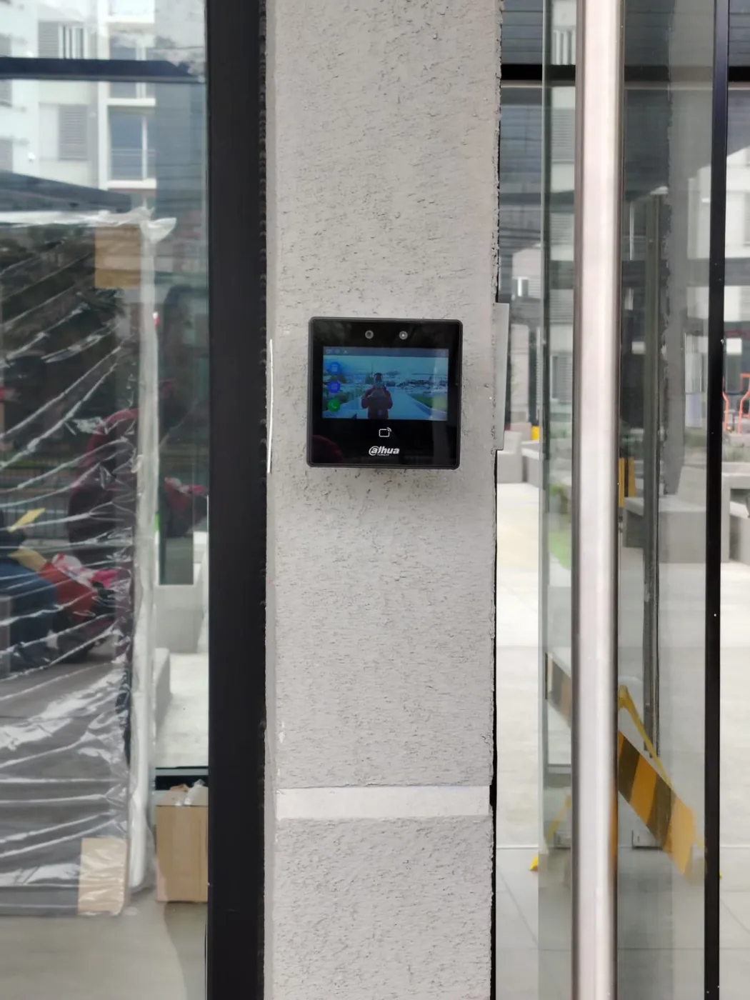

Caso 01 / Condominio
Modernización de CCTV y control de acceso en condominio
Seguridad centralizada, control de acceso renovado e infraestructura lista para crecer.

Desafío
El condominio necesitaba mejorar su sistema de seguridad, centralizar la visualización de cámaras y modernizar el control de acceso principal.
Solución implementada
ZN Technology diseñó e implementó una solución que integró:
- Cámaras IP
- NVR de 32 canales
- Switches PoE
- Enlaces de fibra óptica entre edificios
- Racks y respaldo mediante UPS
- Control de acceso facial
- Botón no touch
- Integración con retenedores existentes
Además, se reorganizó parte de la infraestructura de red y alimentación asociada al sistema.
Resultado
El condominio quedó con una plataforma de seguridad centralizada, mayor orden de infraestructura y una base preparada para futuras ampliaciones de cámaras y control de acceso.